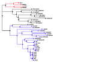

Data preparation
Branch tagging
Starting from this phylogeny untagged newick file,
an alternative we can use for branch tagging is the phylotree web application. See phylotree tutorial for details on how to do this.
Then, after a few button clicks in the app, we get a tagged newick file

We can extract the treestring and the tags from the newick file with import_labeled_phylotree_newick